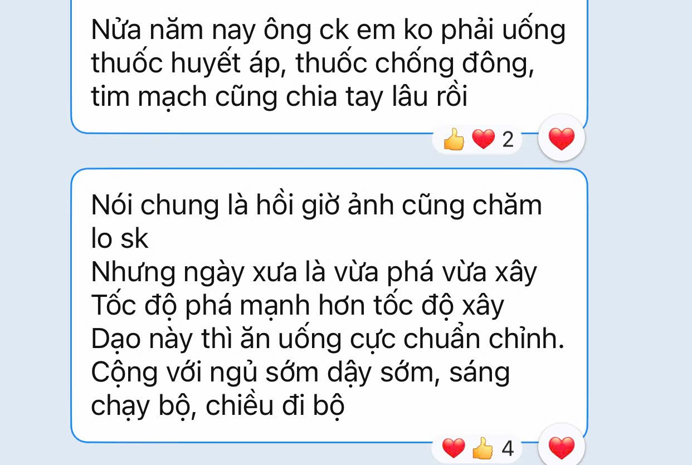
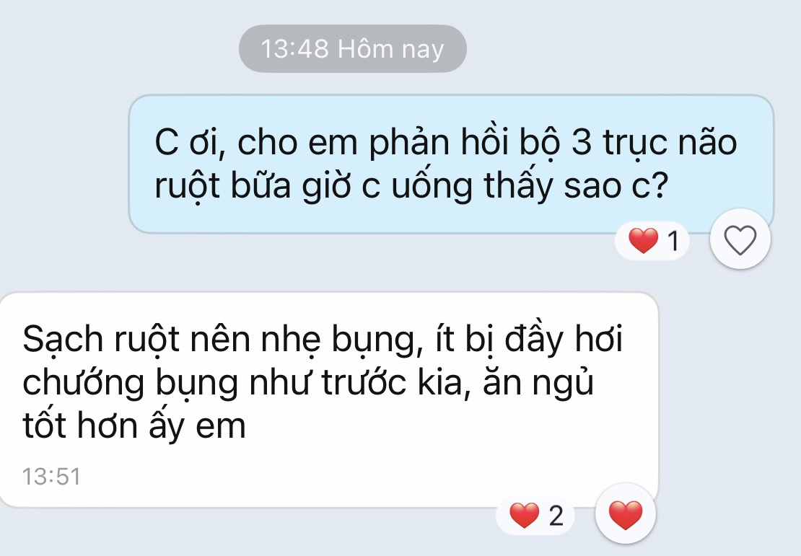
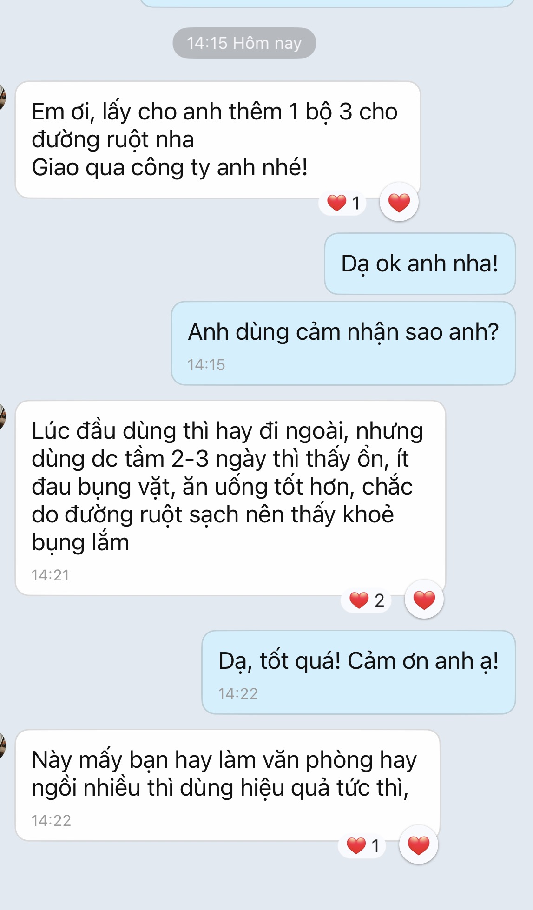
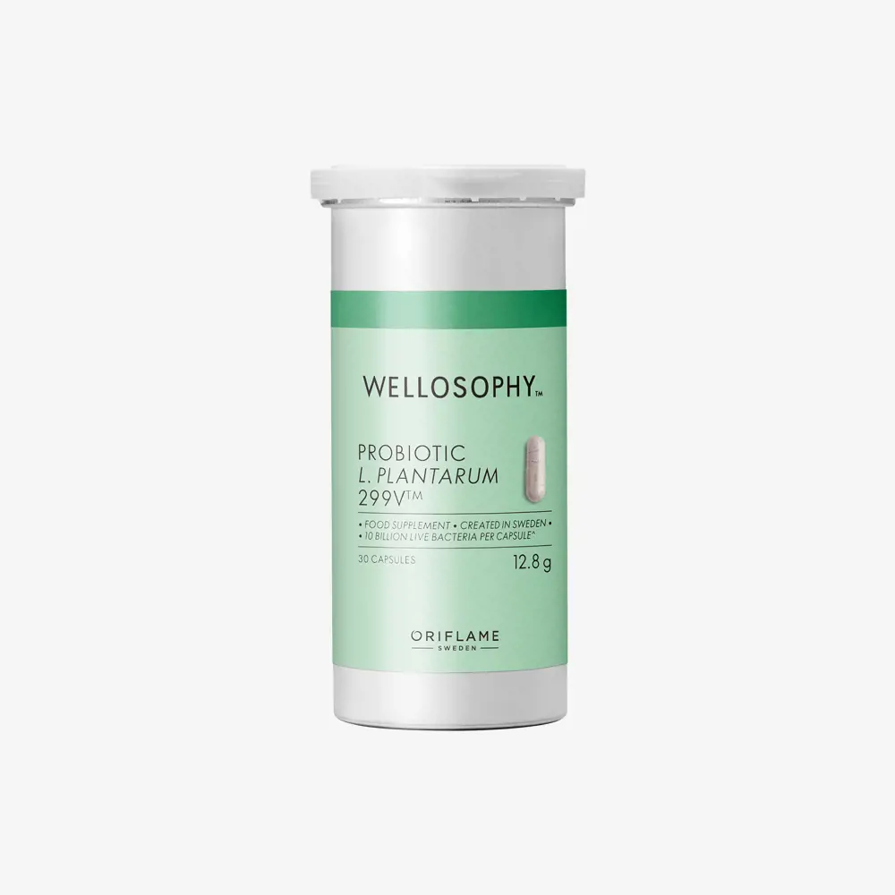
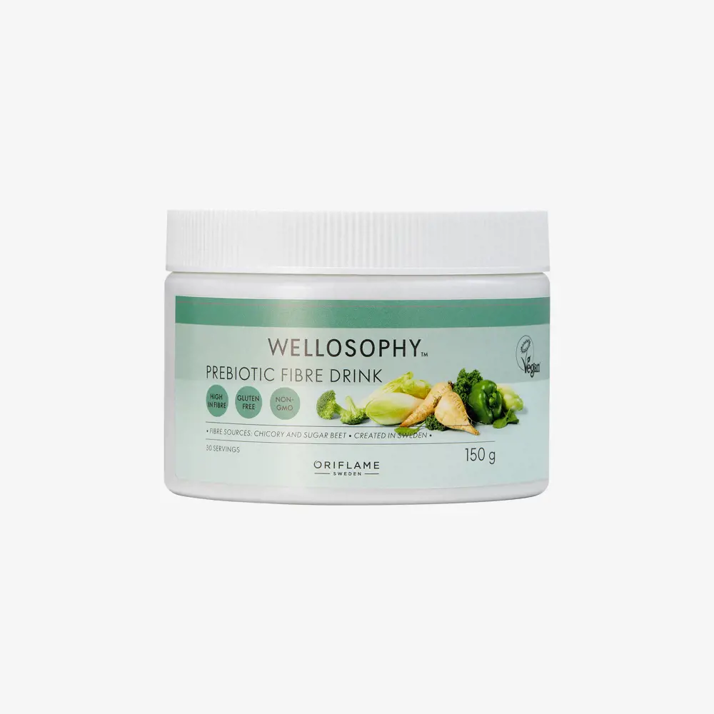
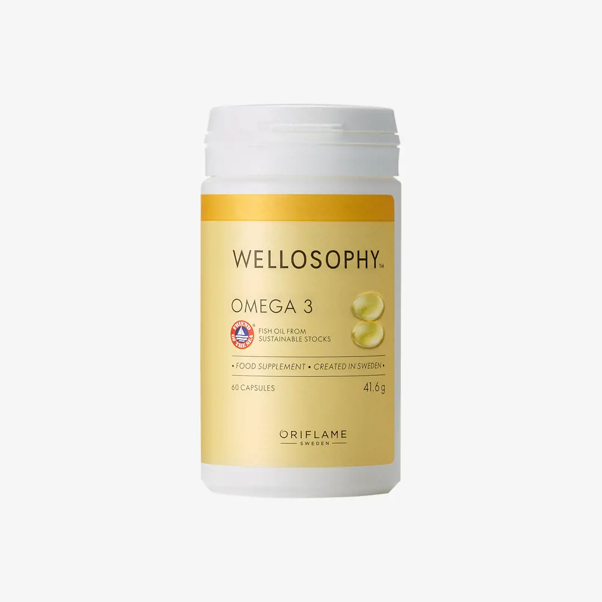

Giải pháp dinh dưỡng khoa học chuẩn Bắc Âu giúp phục hồi hệ vi sinh đường ruột, nuôi dưỡng não bộ và bảo vệ sức khỏe toàn diện từ gốc rễ.
Ruột được giới khoa học gọi là "bộ não thứ hai" — theo các nghiên cứu y khoa, khoảng 90–95% serotonin (hormone hạnh phúc, điều hoà tâm trạng và giấc ngủ) của cơ thể được sản xuất tại đường ruột, không phải ở não. Đáng nói hơn, phần lớn các triệu chứng như đầy hơi, khó tiêu, táo bón nhẹ thường bị xem là "chuyện bình thường" và bỏ qua — trong khi đây chính là dấu hiệu sớm cho thấy hệ vi sinh đường ruột đang mất cân bằng, ảnh hưởng trực tiếp ngược lên tâm trạng, giấc ngủ và trí nhớ thông qua trục não da ruột.
Sản xuất 90–95% serotonin và là nơi trú ngụ của 70% tế bào miễn dịch toàn cơ thể.
Cấu tạo gần 60% chất béo (Omega-3), liên tục nhận tín hiệu dẫn truyền thần kinh từ vi sinh vật ruột qua dây thần kinh phế vị.
Là tấm gương phản chiếu sức khỏe đường ruột; độc tố rò rỉ từ màng ruột yếu sẽ biểu hiện thành mụn, viêm và da xỉn màu.
* Nguồn: Bộ Y tế & Bệnh viện Bạch Mai (nhiễm khuẩn HP); Hội Nội khoa Việt Nam (trào ngược dạ dày - thực quản); khảo sát người lao động Việt Nam (2023); tổng hợp nghiên cứu về serotonin & trục não da ruột.
Đầy hơi, táo bón, khó tiêu không chỉ gây bức bối ở bụng — mà còn khiến cơ thể "âm thầm" viêm nhẹ, kéo theo cảm giác mệt mỏi rã rời, khó tập trung và hay quên việc.
Hệ vi sinh mất cân bằng khiến hàng rào tự nhiên suy yếu, cơ thể dễ ốm vặt khi thời tiết thay đổi. Probiotic 299V™ và chất xơ Prebiotic chính là 2 mảnh ghép thiết yếu nuôi dưỡng và kích hoạt lại hàng rào miễn dịch này.
Phần lớn trong đó là Omega-3 (EPA & DHA) — loại dưỡng chất cơ thể con người hoàn toàn không tự tổng hợp được. Thiếu hụt Omega-3 lâu ngày làm suy giảm sự tỉnh táo, gây suy giảm trí nhớ và ảnh hưởng tim mạch.
Thói quen ăn đồ chế biến nhanh, ít rau củ tươi, ít cá biển sâu khiến cả 3 mắt xích của trục não da ruột bị "bỏ đói" dưỡng chất thiết yếu mỗi ngày mà nhiều người không nhận ra.
Dành 2 phút lắng nghe chuyên gia phân tích cặn kẽ cách đường ruột vận hành và ảnh hưởng đến cả cơ thể.
Chăm sóc cơ thể khoa học theo đúng chu kỳ sinh học tự nhiên của tế bào và đường ruột.
Hết chướng bụng, đỡ đầy hơi khó tiêu, đại tiện trơn tru đều đặn nhờ 10 tỷ lợi khuẩn L. plantarum 299V™ cùng 6 nguồn chất xơ Prebiotic cao cấp nuôi lợi khuẩn phát triển.
⏱️ Cảm nhận rõ sau 1 – 2 tuầnKhi trục não - ruột được giải tỏa áp lực, lượng serotonin tự nhiên được sản sinh ổn định, giúp cải thiện chất lượng giấc ngủ sâu và cân bằng cảm xúc mỗi ngày.
⏱️ Cảm nhận rõ sau 2 – 3 tuầnHàm lượng 150mg EPA & 100mg DHA/ngày hỗ trợ tối ưu chức năng màng tế bào thần kinh, xua tan cảm giác "sương mù não" và mệt mỏi uể oải giờ trưa chiều.
⏱️ Cảm nhận rõ sau 2 – 4 tuầnDầu cá tinh khiết giàu EPA & DHA hỗ trợ thanh lọc mỡ máu (triglyceride), ngăn ngừa tích tụ mảng bám xơ vữa trong lòng động mạch, bảo vệ trái tim khỏe mạnh dài lâu.
🛡️ Hiệu quả bảo vệ dài hạnKhi 70% tế bào miễn dịch tại đường ruột được cung cấp đầy đủ lợi khuẩn và thức ăn prebiotic, hàng rào đề kháng tự nhiên của cơ thể hoạt động bền bỉ, đẩy lùi vi khuẩn và virus gây hại.
🛡️ Hiệu quả bảo vệ dài hạnNhững tin nhắn chia sẻ chân thật từ khách hàng đã sử dụng Bộ 3 Trục Não Da Ruột Wellosophy.



Đa số khách hàng sau khi dùng hết liệu trình tháng đầu tiên đều tự chủ động nhắn tin đặt lại bộ tiếp theo — bởi vì không gì thuyết phục bằng cảm giác cơ thể nhẹ nhõm, bụng êm, giấc ngủ sâu và đầu óc sảng khoái mỗi ngày.
Dinh dưỡng chất lượng chuẩn Châu Âu của tập đoàn Oriflame Thụy Điển — thành lập từ năm 1967, uy tín vững chắc tại hơn 60 quốc gia.



Được phân lập từ chính niêm mạc ruột non người khỏe mạnh, có khả năng bám dính niêm mạc ruột vượt trội gấp nhiều lần chủng thông thường. Khả năng sống sót cao qua môi trường axit khắc nghiệt của dạ dày nhờ công nghệ vỏ nang thực vật HPMC cao cấp. Bổ sung Vitamin B3 (Niacin) và chiết xuất mâm xôi đen giàu chất chống oxy hoá tự nhiên, hỗ trợ tiêu hóa êm khỏe, giảm nhanh đầy hơi, táo bón và củng cố hệ miễn dịch ruột.
Công thức độc đáo phối hợp 6 loại rau củ tự nhiên: Inulin từ rau diếp xoăn, FOS từ củ cải đường kết hợp cùng bột rau bina (spinach), ớt chuông xanh, bông cải xanh (broccoli) và cải xoăn (kale). Cung cấp chất xơ hòa tan tự nhiên hỗ trợ nhuận tràng, tăng thể tích phân, làm sạch lòng ruột và chống táo bón hiệu quả. Sản phẩm 100% thuần thực vật, không chứa gluten, không biến đổi gen (non-GMO), vị thanh mát cực kỳ dễ uống.
Chiết xuất từ dầu cá sạch đạt chứng nhận Friend of the Sea® về nguồn đánh bắt bền vững, quy trình lọc 5 bước loại bỏ hoàn toàn kim loại nặng và tạp chất độc hại. Vỏ nang viên mềm từ gelatin cá tự nhiên tinh khiết, chống oxy hóa tối đa. Cung cấp chuẩn 250mg EPA + DHA mỗi ngày theo đúng khuyến nghị của WHO/FAO. Giúp điều hòa mỡ máu, giảm triglyceride, ngăn ngừa mảng bám thành mạch, đồng thời dưỡng sáng mắt và tăng cường khả năng tư duy não bộ.
Đầu tư xứng đáng cho sức khỏe gốc rễ với chính sách giá ưu đãi trực tiếp từ thương hiệu.
Tiết kiệm khủng 453.000đ so với nguyên giá (~23% giảm giá độc quyền) — áp dụng khi đăng ký thành viên VIP / khách hàng thân thiết.
💬 Nhắn Zalo Kiểm Tra Điều Kiện VIP (Miễn Phí)Chỉ mất 2 phút mỗi ngày để thiết lập thói quen sống khỏe cho toàn bộ cơ thể.
Uống 2 viên mỗi ngày sau bữa ăn (tốt nhất là sau bữa sáng hoặc bữa trưa có chất béo nhẹ để cơ thể hấp thu tối đa EPA & DHA).
Uống 1 viên mỗi ngày sau bữa ăn với một ly nước đầy. Lưu ý quan trọng: Sử dụng nước nguội hoặc nước mát, tuyệt đối tránh uống cùng nước sôi hoặc thức ăn quá nóng làm giảm tỉ lệ sống của lợi khuẩn.
Pha 1,5 muỗng cà phê (5g) vào 250ml nước lạnh hoặc nước ấm, khuấy đều và thưởng thức ngay vào buổi sáng hoặc trước bữa ăn trong ngày.
Tất cả những điều bạn cần biết trước khi bắt đầu hành trình phục hồi sức khỏe.
Thông thường chỉ sau 1 đến 2 tuần đầu tiên, bạn đã cảm nhận bụng êm ái hơn hẳn, giảm hẳn tình trạng đầy hơi trướng bụng và đại tiện trơn tru đều đặn. Từ tuần thứ 3 đến tuần thứ 4 trở đi, giấc ngủ sâu hơn, tinh thần minh mẫn, giảm stress và cơ thể tràn đầy năng lượng.
Hoàn toàn rất nên dùng! Chủng lợi khuẩn L. plantarum 299V™ đã có thử nghiệm lâm sàng chuyên biệt cho hội chứng ruột kích thích (IBS) và viêm đường tiêu hóa. Cùng với chất xơ hòa tan prebiotic làm dịu niêm mạc ruột và Omega-3 chống viêm tự nhiên, bộ 3 giúp hỗ trợ làm lành và cân bằng lại môi trường vi sinh tiêu hóa cực kỳ hiệu quả.
Bạn chỉ cần nhắn tin cho chúng tôi qua Zalo 0905.109.933. Chuyên viên sẽ hỗ trợ bạn đăng ký mã thành viên VIP hoàn toàn miễn phí chỉ trong 2 phút để được kích hoạt ngay mức chiết khấu 23% trọn đời cho mọi đơn hàng.
Prebiotic Fibre Drink có vị trung tính rất thanh nhẹ, không chứa đường nhân tạo, không mùi gắt hóa học. Bạn có thể dễ dàng pha cùng nước lọc mát, hoặc kết hợp chung với nước ép trái cây, sữa hạt hay sinh tố buổi sáng cực kỳ thơm ngon.
Đơn hàng Bộ 3 Wellosophy được miễn phí giao hàng toàn quốc. Bạn được quyền kiểm tra sản phẩm trước khi thanh toán (COD) cho nhân viên giao hàng, đảm bảo nguyên đai nguyên kiện và tem mác chuẩn châu Âu.
Đừng để hệ tiêu hóa quá tải ảnh hưởng đến trí não và tâm trạng mỗi ngày.
Bộ 3 chỉ 1.734.000đ — hoặc giá đặc quyền VIP 1.474.000đ.